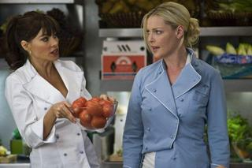
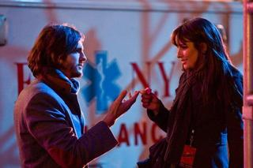
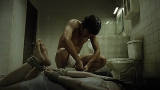
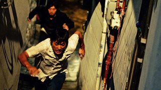
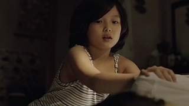
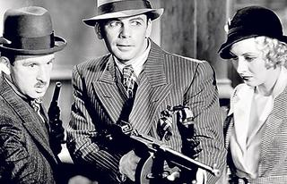
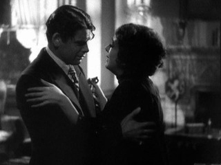
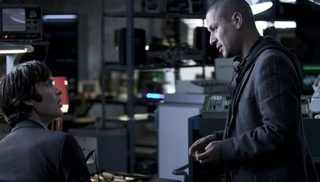
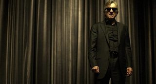
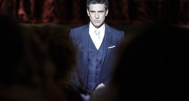

Sat, 07 Apr 2012 05:28:00 GMT
El Festival de Málaga anuncia el programa de su 15ª edición
El Festival de Málaga anuncia el programa de su 15ª edición
Todos los años comunicamos la celebración del Festival de Cine Español de Málaga y en varias ocasiones he podido cubrirlo in situ. No podemos ignorar, por lo tanto, su 15ª edición, que tendrá lugar del 21 al 28 de abril, precisamente el año en el que más apoyo necesita nuestra cinematografía por encontrarse en una absoluta crisis financiera, que ha devenido en un abismal bajón en la cantidad de rodajes iniciados en lo que va de 2012. ‘The Pelayos’ o ‘Los Pelayo’, de Eduard Cortés –cuyo tráiler puede verse aquí, acompañado de información– será a película que inaugurará el festival, la noche del 21, en el Teatro Cervantes, además de competir en la Sección Oficial. Otro de los títulos que competirán por la Biznaga de Oro es ‘Miel de naranjas’, de Imanol Uribe, uno de los directores destacados de la cinematografía española, con trabajos como ‘Días contados’, ‘El rey Pasmado’, ‘Plenilunio’ o ‘El viaje de Carol’, entre otros. ‘Miel de Naranjas’, sobre cuyo rodaje ya os hablamos, es un drama romántico ambientado en la Andalucía de la década de los 50, que cuenta la historia de dos enamorados en una época de detenciones y encierros y que el propio Uribe define como “un thriller político de múltiples matices e influencia de muy diferentes estilos cinematográficos”. El guion está firmado por Remedios Crespo y el reparto lo encabezan Iban Garate, Blanca Suárez, Karra Elejalde, Ángela Molina, Bárbara Lennie, Eduard Fernández, Fernando Soto y Nora Navas. Su estreno en salas llegará el 18 de mayo. Patricia Ferreira, que ya presentó a competición en el Festival de Málaga ‘El alquimista impaciente’, vuelve al certamen con ‘Els nens salvatges’, la historia de tres adolescentes desubicados que buscan su lugar en el mundo, sobre la que podéis recabar más datos aquí. Marina Comas (‘Pa negre’), Álex Monrer y Albert Baró, forman el trío protagonista, en un reparto que se completa con Ana Fernández, Vicky Peña, Emma Vilarassau, Francesc Orella, Aina Clotet, Clara Segura, Montse Germán y José Luis García Pérez. ‘El sexo de los ángeles’, de Xavier Villaverde, es otra de las cintas a competición de la que ya habíamos anunciado su rodaje. Llorenç González, Álvaro Cervantes y Astrid Bergès-Frisbey protagonizan una historia de amor y amistad, de fidelidad, libertad, celos y miedos, en la que las fronteras se disuelven a ritmo de break y funky para ofrecer una visión provocadora, excitante y profundamente conmovedora de las relaciones sentimentales. Otra de las películas más esperadas es el debut en la dirección del actor Paco León: ‘Carmina o revienta’, un falso documental que tiene como centro de acción a su familia y como protagonista absoluta a su madre, además de su hermana, María León, Premio Goya a la Mejor Actriz Revelación por ‘La voz dormida’. La película cuenta la aventura de Carmina, que después de sufrir varios robos inventa una manera de recuperar los 80 jamones que les han robado para que su familia pueda seguir adelante. ‘Animazine’: una nueva sección sobre animación El Festival de Málaga. Cine Español ha incluido la sección ‘Animazine’, de cine de animación, en cuya Sección Oficial participa ‘O Apóstolo’, de Fernando Cortizo, la primera película europea en stop-motion estereoscópica. Es la historia de un convicto, recién fugado de la cárcel, que tratará de recuperar un botín escondido años atrás en una solitaria y apartada aldea, en el Camino de Santiago, que encontrará en su lugar una condena todavía mayor que aquella de la que huyó. Prometen que la película tendrá misterio, terror, humor y fantasía. ‘O Apóstolo’, cuya producción ya fue noticia en Blogdecine, está protagonizada por las versiones animadas de los actores Carlos Blanco, Jorge Sanz, Celso Bugallo, Luis Tosar, Geraldine Chaplin, Manuel Manquiña, Atilano Franco e Isabel Blanco. Esta edición del Festival contará con sus habituales secciones como Sección Oficial de Largometrajes, Zonazine, Estrenos, Cortometrajes, Territorio Latinoamericano, Documentales y la nueva sección de Animazine, así como los diferentes ciclos y homenajes de los que destacamos el Premio Ricardo Franco- Academia de Cine otorgado al músico Roque Baños, la Película de Oro a ‘La Tía Tula’ de Miguel Picazo y la entrega al cineasta Cesc Gay del Premio Eloy de la Iglesia/La Opinión de Málaga. Vía | Página Oficial del Festival de Málaga.
Todos los años comunicamos la celebración del Festival de Cine Español de Málaga y en varias ocasiones he podido cubrirlo in situ. No podemos ignorar, por lo tanto, su 15ª edición, que tendrá lugar del 21 al 28 de abril, precisamente el año en el que más apoyo necesita nuestra cinematografía por encontrarse en una absoluta crisis financiera, que ha devenido en un abismal bajón en la cantidad de rodajes iniciados en lo que va de 2012.
‘The Pelayos’ o ‘Los Pelayo’, de Eduard Cortés –cuyo tráiler puede verse aquí, acompañado de información– será a película que inaugurará el festival, la noche del 21, en el Teatro Cervantes, además de competir en la Sección Oficial.
Otro de los títulos que competirán por la Biznaga de Oro es ‘Miel de naranjas’, de Imanol Uribe, uno de los directores destacados de la cinematografía española, con trabajos como ‘Días contados’, ‘El rey Pasmado’, ‘Plenilunio’ o ‘El viaje de Carol’, entre otros. ‘Miel de Naranjas’, sobre cuyo rodaje ya os hablamos, es un drama romántico ambientado en la Andalucía de la década de los 50, que cuenta la historia de dos enamorados en una época de detenciones y encierros y que el propio Uribe define como “un thriller político de múltiples matices e influencia de muy diferentes estilos cinematográficos”. El guion está firmado por Remedios Crespo y el reparto lo encabezan Iban Garate, Blanca Suárez, Karra Elejalde, Ángela Molina, Bárbara Lennie, Eduard Fernández, Fernando Soto y Nora Navas. Su estreno en salas llegará el 18 de mayo.
Patricia Ferreira, que ya presentó a competición en el Festival de Málaga ‘El alquimista impaciente’, vuelve al certamen con ‘Els nens salvatges’, la historia de tres adolescentes desubicados que buscan su lugar en el mundo, sobre la que podéis recabar más datos aquí. Marina Comas (‘Pa negre’), Álex Monrer y Albert Baró, forman el trío protagonista, en un reparto que se completa con Ana Fernández, Vicky Peña, Emma Vilarassau, Francesc Orella, Aina Clotet, Clara Segura, Montse Germán y José Luis García Pérez.
‘El sexo de los ángeles’, de Xavier Villaverde, es otra de las cintas a competición de la que ya habíamos anunciado su rodaje. Llorenç González, Álvaro Cervantes y Astrid Bergès-Frisbey protagonizan una historia de amor y amistad, de fidelidad, libertad, celos y miedos, en la que las fronteras se disuelven a ritmo de break y funky para ofrecer una visión provocadora, excitante y profundamente conmovedora de las relaciones sentimentales.
Otra de las películas más esperadas es el debut en la dirección del actor Paco León: ‘Carmina o revienta’, un falso documental que tiene como centro de acción a su familia y como protagonista absoluta a su madre, además de su hermana, María León, Premio Goya a la Mejor Actriz Revelación por ‘La voz dormida’. La película cuenta la aventura de Carmina, que después de sufrir varios robos inventa una manera de recuperar los 80 jamones que les han robado para que su familia pueda seguir adelante.
‘Animazine’: una nueva sección sobre animación
El Festival de Málaga. Cine Español ha incluido la sección ‘Animazine’, de cine de animación, en cuya Sección Oficial participa ‘O Apóstolo’, de Fernando Cortizo, la primera película europea en stop-motion estereoscópica. Es la historia de un convicto, recién fugado de la cárcel, que tratará de recuperar un botín escondido años atrás en una solitaria y apartada aldea, en el Camino de Santiago, que encontrará en su lugar una condena todavía mayor que aquella de la que huyó. Prometen que la película tendrá misterio, terror, humor y fantasía. ‘O Apóstolo’, cuya producción ya fue noticia en Blogdecine, está protagonizada por las versiones animadas de los actores Carlos Blanco, Jorge Sanz, Celso Bugallo, Luis Tosar, Geraldine Chaplin, Manuel Manquiña, Atilano Franco e Isabel Blanco.
Esta edición del Festival contará con sus habituales secciones como Sección Oficial de Largometrajes, Zonazine, Estrenos, Cortometrajes, Territorio Latinoamericano, Documentales y la nueva sección de Animazine, así como los diferentes ciclos y homenajes de los que destacamos el Premio Ricardo Franco- Academia de Cine otorgado al músico Roque Baños, la Película de Oro a ‘La Tía Tula’ de Miguel Picazo y la entrega al cineasta Cesc Gay del Premio Eloy de la Iglesia/La Opinión de Málaga.
Vía | Página Oficial del Festival de Málaga.
Fri, 06 Apr 2012 07:03:46 GMT
'Noche de Fin de Año', engendro romántico
'Noche de Fin de Año', engendro romántico
El amor es uno de los principales ejes de la vida de todos nosotros, y también es uno de los temas más abordados por el arte en general y por el cine en concreto. Ya puede ser la obra explícitamente dedicado a ello o como trama secundaria incluso cuando hay una invasión de rotos extraterrestres de por medio. Mi compañero Alberto está dedicando un especial a ello, a través del cual va a ofrecer una visión de todos los aspectos del amor hablando de 32 películas. Es obvio que fuera se van a tener que quedar muchas grandes joyas, pero en algún punto hay que acotarlo para que la cosa no se desmadre. En los últimos tiempos, han proliferado bastante las comedias románticas que se basan en contar infinidad de pequeñas historias que acaban confluyendo de una forma u otra hacia el final de la misma. Hay casos en los que se optó por potenciar algo más el elemento dramático como en ‘Jugando con el corazón’, pero por lo general la comedia es el género predominante, siendo la estupenda ‘Love Actually’ el caso más representativo (y exitoso) de esta veta. Si hasta una de las mejores películas del año pasado pertenece a esta línea que comento. Era obvio que en algún momento Garry Marshall, uno de los grandes gurús del género (sólo por haber hecho ‘Pretty Woman’ ya merece ese honor), iba a acabar aprovechando ese filón más temprano que tarde y lo ha hecho por partida doble en un escaso margen de tiempo: Primero nos llegó esa simpática tontería que es ‘Historias de San Valentín’ y hace apenas unos meses se estrenó ‘Noche de Fin de Año’. Esta vez ni me voy a molestar en intentar crear intriga sobre si estamos ante una película que merezca la pena, ya que ‘Noche de Fin de Año’ es una basura insalvable. Os invito a conocer los motivos. Es evidente que no todos los casos de películas sobre el amor confían en un guión bien cuidado que haga más fácil a sus protagonistas conseguir la tan necesidad empatía entre personajes y espectador, pero lo que siempre debería evitarse es caer en lo más fácil e insultante, que es lo que hace ‘Noche de Fin de Año’. Creo que el mejor ejemplo que puedo poner son esos momentos en los que uno está tan fastidiado por algo sentimental que hasta la canción más simplona y tramposa consigue tocarte la fibra sensible. No son pocos los artistas que han basado su carrera musical en varios hits de este tipo, y esa es la clave para entender los objetivos de la cinta que nos ocupa. Si hay algo innegable es que ‘Noche de Fin de Año’ cuenta con un reparto que, por un nombre u otro, tiene suficiente potencial para llamar la atención de casi cualquier espectador. Hay ganadores del Oscar, intérpretes populares para el sector joven y adulto, cómicos con cierta popularidad y hasta el cantante Jon Bon Jovi tiene una presencia relevante en el relato. Sin embargo, estamos ante un ejemplo de que es muy complicado hacer interesante un guión absolutamente lamentable. Podría ir mencionando cada una de las historias y resaltando que falla en cada una de ellas, pero lo que tiende a coincidir en todos los casos es que los personajes están totalmente alejados de la realidad, no pueden ser más esquemáticos ni tener unas reacciones más previsibles y, ocasionalmente, molestas, y se tiende a la sobresaturación de algodón de azúcar (y antes los conflictos y tragedias de los personajes carecen de la más mínima credibilidad) en el destino final de todos ellos. Ante todo, positivismo engañoso para que el espectador salga contento de la sala, pero el plan no sale bien. Por su parte, el trabajo de Marshall tras las cámaras no podría ser más vulgar y anodino, ya que se muestra incapaz de transmitir la más mínima personalidad. Además, se muestra incapaz de añadir algún detalle en la puesta en escena que nos permita implicarnos en lo que se nos está contando, siendo una constante que estemos deseando que abandone cualquiera de las historias cuando ni siquiera hayamos estado un minuto con esos personajes. Lo imperdonable es que eso sucede con todas las historias, y es que no hay nada que uno pueda decir ‘al menos esto ha merecido la pena’. Todo es un completo desastre. Ya he comentado que el poblado reparto de la película no consigue solucionar los fallos de un guión típico, tramposo y aburrido (que si al menos entretuviera se podía medio perdonar todo lo demás), pero he olvidado destacar el horrible trabajo de la gran mayoría de ellos. Para que os hagáis una idea, el único capaz de transmitir una mínima emoción a su personaje es el interpretado por Zac Efron, alguien que, en condiciones normales, tendría que haber ofrecido una de las peores actuaciones del reparto.. El resto, a mitad de camino entre la desgana (Robert De Niro), la incapacidad (Katherine Heigl, Ashton Kutcher, Sarah Jessica Parker) y la mediocridad (Michelle Pfeiffer, Carla Gugino). Luego está el caso de Bon Jovi demostrando que sencillamente actuar no es lo suyo (y en la música hace muchos años que dejó atrás sus mejores años) y la confirmación definitiva de que Hilary Swank tuvo una suerte tremenda al conseguir los dos papeles que hicieron que ganase el Oscar, porque por lo demás su carrera da bastante pena. Sé que me dejo varios nombres populares por comentar (¿Dónde quedó el gran talento demostrado por Abigail Breslin en sus roles infantiles?), pero no hay nada bueno que decir. ¿Se dejan contagiar por el pésimo nivel del guión de Katherine Fugate? Grave error. Por último, me gustaría comentar el contenido spam que hay en la propia película, ya que Warner ha aprovechado las escenas que se ambientan en Times Square (hasta consiguen matar el innegable encanto navideño de Nueva York) previas a la celebración de fin año para poner un cartel gigante de la mediocre ‘Sherlock Holmes: Juego de Sombras’ en uno de los laterales para que al menos ‘Noche de Fin de Año’ sirviera para hacer publicidad gratuita al gran estreno navideño de la compañía. Muy triste. Además, la película aprovecha sus tomas falsas finales (quizá las menos graciosas que haya podido ver, y no han sido pocas) para también promocionar su edición en dvd y bluray. Quizá sea que estaba demasiado cabreado y le doy más importancia de la que tiene, pero me decanto por apoyar más la idea de que debería caérseles la cara de vergüenza. En definitiva, ‘Noche de fin de año’ es un engendro bochornoso que denigra el concepto del amor con la finalidad de amasar algo de dinero en la taquilla. Y el problema es que, pese a que las opiniones sobre la misma han sido mayoritariamente negativas, hasta ha conseguido dar beneficios. Soy consciente de que muchas personas tienen una especie de monstruo interior que les incita a ver películas como ‘Noche de fin de año’, pero flaco favor hacemos a buen cine si apoyamos de cualquier forma la aparición de porquerías lamentables como ésta. Hasta pasar dos horas mirando a la pared es más productivo y llevadero que ver esta película.
El amor es uno de los principales ejes de la vida de todos nosotros, y también es uno de los temas más abordados por el arte en general y por el cine en concreto. Ya puede ser la obra explícitamente dedicado a ello o como trama secundaria incluso cuando hay una invasión de rotos extraterrestres de por medio. Mi compañero Alberto está dedicando un especial a ello, a través del cual va a ofrecer una visión de todos los aspectos del amor hablando de 32 películas. Es obvio que fuera se van a tener que quedar muchas grandes joyas, pero en algún punto hay que acotarlo para que la cosa no se desmadre.
En los últimos tiempos, han proliferado bastante las comedias románticas que se basan en contar infinidad de pequeñas historias que acaban confluyendo de una forma u otra hacia el final de la misma. Hay casos en los que se optó por potenciar algo más el elemento dramático como en ‘Jugando con el corazón’, pero por lo general la comedia es el género predominante, siendo la estupenda ‘Love Actually’ el caso más representativo (y exitoso) de esta veta. Si hasta una de las mejores películas del año pasado pertenece a esta línea que comento. Era obvio que en algún momento Garry Marshall, uno de los grandes gurús del género (sólo por haber hecho ‘Pretty Woman’ ya merece ese honor), iba a acabar aprovechando ese filón más temprano que tarde y lo ha hecho por partida doble en un escaso margen de tiempo: Primero nos llegó esa simpática tontería que es ‘Historias de San Valentín’ y hace apenas unos meses se estrenó ‘Noche de Fin de Año’. Esta vez ni me voy a molestar en intentar crear intriga sobre si estamos ante una película que merezca la pena, ya que ‘Noche de Fin de Año’ es una basura insalvable. Os invito a conocer los motivos.

Es evidente que no todos los casos de películas sobre el amor confían en un guión bien cuidado que haga más fácil a sus protagonistas conseguir la tan necesidad empatía entre personajes y espectador, pero lo que siempre debería evitarse es caer en lo más fácil e insultante, que es lo que hace ‘Noche de Fin de Año’. Creo que el mejor ejemplo que puedo poner son esos momentos en los que uno está tan fastidiado por algo sentimental que hasta la canción más simplona y tramposa consigue tocarte la fibra sensible. No son pocos los artistas que han basado su carrera musical en varios hits de este tipo, y esa es la clave para entender los objetivos de la cinta que nos ocupa.
Si hay algo innegable es que ‘Noche de Fin de Año’ cuenta con un reparto que, por un nombre u otro, tiene suficiente potencial para llamar la atención de casi cualquier espectador. Hay ganadores del Oscar, intérpretes populares para el sector joven y adulto, cómicos con cierta popularidad y hasta el cantante Jon Bon Jovi tiene una presencia relevante en el relato. Sin embargo, estamos ante un ejemplo de que es muy complicado hacer interesante un guión absolutamente lamentable. Podría ir mencionando cada una de las historias y resaltando que falla en cada una de ellas, pero lo que tiende a coincidir en todos los casos es que los personajes están totalmente alejados de la realidad, no pueden ser más esquemáticos ni tener unas reacciones más previsibles y, ocasionalmente, molestas, y se tiende a la sobresaturación de algodón de azúcar (y antes los conflictos y tragedias de los personajes carecen de la más mínima credibilidad) en el destino final de todos ellos. Ante todo, positivismo engañoso para que el espectador salga contento de la sala, pero el plan no sale bien.

Por su parte, el trabajo de Marshall tras las cámaras no podría ser más vulgar y anodino, ya que se muestra incapaz de transmitir la más mínima personalidad. Además, se muestra incapaz de añadir algún detalle en la puesta en escena que nos permita implicarnos en lo que se nos está contando, siendo una constante que estemos deseando que abandone cualquiera de las historias cuando ni siquiera hayamos estado un minuto con esos personajes. Lo imperdonable es que eso sucede con todas las historias, y es que no hay nada que uno pueda decir ‘al menos esto ha merecido la pena’. Todo es un completo desastre.
Ya he comentado que el poblado reparto de la película no consigue solucionar los fallos de un guión típico, tramposo y aburrido (que si al menos entretuviera se podía medio perdonar todo lo demás), pero he olvidado destacar el horrible trabajo de la gran mayoría de ellos. Para que os hagáis una idea, el único capaz de transmitir una mínima emoción a su personaje es el interpretado por Zac Efron, alguien que, en condiciones normales, tendría que haber ofrecido una de las peores actuaciones del reparto.. El resto, a mitad de camino entre la desgana (Robert De Niro), la incapacidad (Katherine Heigl, Ashton Kutcher, Sarah Jessica Parker) y la mediocridad (Michelle Pfeiffer, Carla Gugino). Luego está el caso de Bon Jovi demostrando que sencillamente actuar no es lo suyo (y en la música hace muchos años que dejó atrás sus mejores años) y la confirmación definitiva de que Hilary Swank tuvo una suerte tremenda al conseguir los dos papeles que hicieron que ganase el Oscar, porque por lo demás su carrera da bastante pena. Sé que me dejo varios nombres populares por comentar (¿Dónde quedó el gran talento demostrado por Abigail Breslin en sus roles infantiles?), pero no hay nada bueno que decir. ¿Se dejan contagiar por el pésimo nivel del guión de Katherine Fugate? Grave error.
Por último, me gustaría comentar el contenido spam que hay en la propia película, ya que Warner ha aprovechado las escenas que se ambientan en Times Square (hasta consiguen matar el innegable encanto navideño de Nueva York) previas a la celebración de fin año para poner un cartel gigante de la mediocre ‘Sherlock Holmes: Juego de Sombras’ en uno de los laterales para que al menos ‘Noche de Fin de Año’ sirviera para hacer publicidad gratuita al gran estreno navideño de la compañía. Muy triste. Además, la película aprovecha sus tomas falsas finales (quizá las menos graciosas que haya podido ver, y no han sido pocas) para también promocionar su edición en dvd y bluray. Quizá sea que estaba demasiado cabreado y le doy más importancia de la que tiene, pero me decanto por apoyar más la idea de que debería caérseles la cara de vergüenza.
En definitiva, ‘Noche de fin de año’ es un engendro bochornoso que denigra el concepto del amor con la finalidad de amasar algo de dinero en la taquilla. Y el problema es que, pese a que las opiniones sobre la misma han sido mayoritariamente negativas, hasta ha conseguido dar beneficios. Soy consciente de que muchas personas tienen una especie de monstruo interior que les incita a ver películas como ‘Noche de fin de año’, pero flaco favor hacemos a buen cine si apoyamos de cualquier forma la aparición de porquerías lamentables como ésta. Hasta pasar dos horas mirando a la pared es más productivo y llevadero que ver esta película.
Wed, 04 Apr 2012 06:40:00 GMT
'The Chaser', quien a hierro mata…
'The Chaser', quien a hierro mata…
Antes de ‘The Yellow Sea’ (‘Hwanghae, 2010), Na Hong-jin había debutado con ‘The Chaser’ (’‘Chugyeogja’‘, 2008), un thriller policial protagonizado por interpretada por Yun-seok Kim, Ha Jung-woo, Seo Yeong-hie, Jung In-gi y Park Hyo-ju. Lo primero que llama la atención del cine de Na Hong-jin es una estética cuidada, con una fotografía estilizada, que en el caso que nos ocupa es oscura y en tonos ocres, además de un gran realismo en la violencia, como ya hemos apreciado en otras cintas coreanas. El perseguidor del título corre tras el asesino con la autenticidad con la que golpea su cráneo o asesta patadas contra sus costados. Pero veremos que esta opción física por una bestialidad cruda no es lo único que ofrece el surcoreano. ‘The Chaser’ da la vuelta a la estructura canónica de una investigación criminal: el caso está resuelto casi desde el comienzo y es a partir de ahí cuando se lanza una prueba contrarreloj que se aleja de lo que podríamos esperar en el thriller más convencional, sin por ello salirse del género. A la cinta de acción se le suman ingredientes profundos, en cuanto a definición de personajes y a crítica social: desde el principio hemos llegado a lo que sería la meta para otras investigaciones, ya que aquí de lo que se trata es de comprobar si la estulticia policial, las apariencias y la burocracia serán superiores a las ganas de salvar la vida de una madre. Empleando la ironía dramática, sitúa a los espectadores en un nivel de conocimiento de la información mucho mayor que el que disfruta cualquiera de los personajes –de hecho, ellos ni se creen las verdades que se les desvelan– y, gracias a ese ardid narrativo, logra una admirable tensión, que se sostiene durante un tiempo mucho más largo del que suele durar en los policiales más conseguidos. El guion, que al principio parece caótico y deslavazado, en realidad es un prodigio de intrincación de tiempos: a diferencia de otros films asiáticos, la trama es muy fácil de seguir y no se produce ningún momento de confusión, lo que también es mérito de un prodigioso montaje que mantiene un ritmo acelerado para no perder el suspense ni siquiera cuando las escenas no son de acción. De hecho, casi causan más desazón las secuencias en las que podría parecer que no está pasando nada, debido a que es esta actitud indolente la que desespera al hacerte comprender que nada se hará al respecto. Es muy difícil sostener un paralelo tan extenso, en el que parece que no está pasando nada, mientras que cada personaje se ocupa en una cosa: la chica trata de huir durante un tiempo indefinido, la policía se mueve caóticamente sin dejar de tener cosas que hacer, el protagonista sigue pistas más o menos falsas, pero todas sin continuación… Podría resultar poco verosímil que siempre haya otro lugar al que acudir, otra prueba que inspeccionar y que los tiempos encajasen entre los tres… sin embargo, todo se percibe plausible. Nos encontramos de nuevo aquí, al igual que en el cine de Bong Joon-ho, ese tono en el que es difícil distinguir el drama del humor y donde las cuestiones costumbristas empañan la narración hasta el punto de resultan extrañas a un espectador acostumbrado a la pulcritud de las acciones de los films norteamericanos. Esto puede causar una primera impresión de sorpresa, pero pasada esta, debemos reconocer que hay mucho mayor realismo en esta mezcolanza difícil de ubicar. De la misma manera impresiona, vista desde occidente, la geografía urbana de Seúl. Calles empinadas y laberínticas por las que los coches circulan y aparcan aunque parezca que no están trazadas para ellos, y direcciones imposibles de hallar nos hacen pensar en una aglomeración de aldeas antes que en una gran ciudad. Todas estas cuestiones que aderezan al relato con un grado más de asombro, supongo que de la misma forma que algunas cuestiones que aquí tenemos asumidas llaman la atención a espectadores foráneos del cine español. La niña Yoo-Jeong Kim es increíble y, aunque sea el elemento que sirva al protagonista para cuestionarse la moralidad de su profesión, nunca lo transmite a través de la blandura o de la exacerbación de los valores familiares. Este personaje evoluciona sin que parezca que puede haberle dado tiempo. Lo que ocurre, a veces tan duro que llegamos a pensar en una crueldad gratuita, está relacionado con esa redención. La dureza de ‘The Chaser’ no está en los planos, en las gotas o más bien chorros de sangre que se desprenden y salpican, no se encuentra en los martillazos, no está en los ganchos oxidados del sucio cuarto de baño donde se llevan a cabo las ejecuciones… la dureza de la película reside mucho más abajo que todo eso, en el fondo o en el poso que deja el contenido de lo que se está contando. Esa crítica social hacia la figura policial que ya vimos casi igual de vilipendiada en otra obra maestra surcoreana: ‘Memories of Murder’.
Continúa leyendo el especial Na Hong-jin con la crítica de ‘The Yellow Sea’. Otra crítica en Blogdecine | ‘The Chaser’, el ser humano, ese horrible monstruo.

Antes de ‘The Yellow Sea’ (‘Hwanghae, 2010), Na Hong-jin había debutado con ‘The Chaser’ (’‘Chugyeogja’‘, 2008), un thriller policial protagonizado por interpretada por Yun-seok Kim, Ha Jung-woo, Seo Yeong-hie, Jung In-gi y Park Hyo-ju.
Lo primero que llama la atención del cine de Na Hong-jin es una estética cuidada, con una fotografía estilizada, que en el caso que nos ocupa es oscura y en tonos ocres, además de un gran realismo en la violencia, como ya hemos apreciado en otras cintas coreanas. El perseguidor del título corre tras el asesino con la autenticidad con la que golpea su cráneo o asesta patadas contra sus costados. Pero veremos que esta opción física por una bestialidad cruda no es lo único que ofrece el surcoreano.
‘The Chaser’ da la vuelta a la estructura canónica de una investigación criminal: el caso está resuelto casi desde el comienzo y es a partir de ahí cuando se lanza una prueba contrarreloj que se aleja de lo que podríamos esperar en el thriller más convencional, sin por ello salirse del género. A la cinta de acción se le suman ingredientes profundos, en cuanto a definición de personajes y a crítica social: desde el principio hemos llegado a lo que sería la meta para otras investigaciones, ya que aquí de lo que se trata es de comprobar si la estulticia policial, las apariencias y la burocracia serán superiores a las ganas de salvar la vida de una madre. Empleando la ironía dramática, sitúa a los espectadores en un nivel de conocimiento de la información mucho mayor que el que disfruta cualquiera de los personajes –de hecho, ellos ni se creen las verdades que se les desvelan– y, gracias a ese ardid narrativo, logra una admirable tensión, que se sostiene durante un tiempo mucho más largo del que suele durar en los policiales más conseguidos.

El guion, que al principio parece caótico y deslavazado, en realidad es un prodigio de intrincación de tiempos: a diferencia de otros films asiáticos, la trama es muy fácil de seguir y no se produce ningún momento de confusión, lo que también es mérito de un prodigioso montaje que mantiene un ritmo acelerado para no perder el suspense ni siquiera cuando las escenas no son de acción. De hecho, casi causan más desazón las secuencias en las que podría parecer que no está pasando nada, debido a que es esta actitud indolente la que desespera al hacerte comprender que nada se hará al respecto.
Es muy difícil sostener un paralelo tan extenso, en el que parece que no está pasando nada, mientras que cada personaje se ocupa en una cosa: la chica trata de huir durante un tiempo indefinido, la policía se mueve caóticamente sin dejar de tener cosas que hacer, el protagonista sigue pistas más o menos falsas, pero todas sin continuación… Podría resultar poco verosímil que siempre haya otro lugar al que acudir, otra prueba que inspeccionar y que los tiempos encajasen entre los tres… sin embargo, todo se percibe plausible.
Nos encontramos de nuevo aquí, al igual que en el cine de Bong Joon-ho, ese tono en el que es difícil distinguir el drama del humor y donde las cuestiones costumbristas empañan la narración hasta el punto de resultan extrañas a un espectador acostumbrado a la pulcritud de las acciones de los films norteamericanos. Esto puede causar una primera impresión de sorpresa, pero pasada esta, debemos reconocer que hay mucho mayor realismo en esta mezcolanza difícil de ubicar. De la misma manera impresiona, vista desde occidente, la geografía urbana de Seúl. Calles empinadas y laberínticas por las que los coches circulan y aparcan aunque parezca que no están trazadas para ellos, y direcciones imposibles de hallar nos hacen pensar en una aglomeración de aldeas antes que en una gran ciudad. Todas estas cuestiones que aderezan al relato con un grado más de asombro, supongo que de la misma forma que algunas cuestiones que aquí tenemos asumidas llaman la atención a espectadores foráneos del cine español.

La niña Yoo-Jeong Kim es increíble y, aunque sea el elemento que sirva al protagonista para cuestionarse la moralidad de su profesión, nunca lo transmite a través de la blandura o de la exacerbación de los valores familiares. Este personaje evoluciona sin que parezca que puede haberle dado tiempo. Lo que ocurre, a veces tan duro que llegamos a pensar en una crueldad gratuita, está relacionado con esa redención.
La dureza de ‘The Chaser’ no está en los planos, en las gotas o más bien chorros de sangre que se desprenden y salpican, no se encuentra en los martillazos, no está en los ganchos oxidados del sucio cuarto de baño donde se llevan a cabo las ejecuciones… la dureza de la película reside mucho más abajo que todo eso, en el fondo o en el poso que deja el contenido de lo que se está contando. Esa crítica social hacia la figura policial que ya vimos casi igual de vilipendiada en otra obra maestra surcoreana: ‘Memories of Murder’.
- Continúa leyendo el especial Na Hong-jin con la crítica de ‘The Yellow Sea’.
Otra crítica en Blogdecine | ‘The Chaser’, el ser humano, ese horrible monstruo.
Tue, 03 Apr 2012 14:33:28 GMT
Críticas a la carta | 'Scarface' de Howard Hawks
Críticas a la carta | 'Scarface' de Howard Hawks
Resulta curioso que, dada la consideración de film de culto que posee ‘El precio del poder’ (‘Scarface’, Brian De Palma, 1983) —a juicio de quien esto firma, una buena película—, haya salido elegida en esta santa sección el film original dirigido por Howard Hawks, codirigido con Richard Rosson, en 1932, lo cual me ha dado la oportunidad de revisar una de las mejores películas de gangsters que se han realizado, y una de las obras maestras de su director. Con un guion del gran Ben Hecht —¿cuántos guionistas actuales pueden compararse con él? Exacto, es una pregunta retórica— narra el ascenso de un delincuente de procedencia italiana hasta convertirse en todo un jefe del crimen organizado. Cuenta la leyenda que una de las figuras en las que se inspiró el film fue el mismísimo Al Capone, al que le gustó tanto la película que tenía una copia de la misma para su disfrute personal. Hecht ya tenía cierta familiaridad con el cine de gangsters debido a su participación en la imprescindible ‘La ley del hampa’ (‘Underworld’, Josef von Sternberg, 1927) y su trabajo en la presente alcanza la más absoluta perfección, pero no es menos la labor de Hawks, grande entre los grandes, y que consideraba esta como la mejor película que había dirigido. Vista 80 años depués de su estreno sorprende por el atrevimiento de la puesta en escena y su extrema violencia, y sin dejar de estar de acuerdo con Hawks, colocaría el film al lado de otras obras maestras suyas como ‘La fiera de mi niña’ (‘Bringing Up Baby, 1938), ‘Rio rojo’ (‘Red River’, 1948) o ‘El Dorado’ (1966). Ahora bien, es posible que estemos hablando de su film más enérgico y rabioso. La primera secuencia del film es toda una declaración de intenciones y un claro ejemplo de cómo utilizar con sentido común y coherencia una cámara de cine. Esta atraviesa paredes mientras sel interior de un local para presentarnos a un personaje, un mafioso que momentos más tarde es asesinado en off mientras vemos la silueta de Tony Camonte (Paul Muni) efectuando un disparo. Hawks realiza toda la secuencia sin cortar el plano —esto es, en plano secuencia— utilizando un silbido y el posterior disparo como elementos narrativos. El cine estaba cambiando, el sonoro hacía nada que había irrumpido en las salas cinemtográficas, y Hawks, lejos de utilizarlo para comprobar las voces de los actores —fue lo que se hizo en muchas películas— lo empleó de forma envidiable marcando con ello, entre otras cosas, el carácter del personaje central. El silbido anuncia que se producirá un asesinato, y el sonido de una pistola, y sobre todo una metralleta —elemento muy explotado en el remake, quizá demasiado— marcan el lado más violento y firme de Camonte, su rabiosa firmeza a la hora de hacer negocios y sobre todo lo que a él le dé la real gana. Camonte es un delincuente que está por encima del bien y del mal, su aparente falta de conciencia choca con el amor desmesurado —con connotaciones de incesto aún más pronunciadas que en la versión de De Palma— que siente hacia su hermana. Camonte es prácticamente un niño caprichoso que si no se sale con la suya reacciona violentamente. La teatral compisición de Paul Muni le queda como anillo al dedo al personaje, una bomba de relojería que puede estallar en cualquier momento. Los excesos del actor no son tales si tenemos en cuenta la cambiante y obsesiva personalidad de Camonte, el mismo camino seguido por Al Pacino en el remake con su rol cubano. Ascencsión y caída, como mandan los cánones del género, de un gangster con aires de grandeza y totalmente egocentrista. Un guión milimétrico que condensa una historia en apenas hora y media, y una puesta en escena que aboga por la síntesis como arma, nunca mejor dicho, narrativa. Además de algunos plano-secuencia, Hawks echa mano del fuera de campo de forma soberbia al filmar muchas de las escenas violentas de esa manera. Según el gran François Truffaut la mejor secuencia del film es el asesinato en una bolera del personaje interpretado por Boris Karloff, un ejemplo perfecto de utilización de montaje y sonido. Hawks demuestra su nervio en escenas como la citada, y también en aquellas que parecen de transición, como la realizada en un descanso de la obra de teatro que está viendo Camonte y que cuando este se levanta para fumar un montón de guardaespeladas se levantan de sus asientos para proteger de posibles ataques al nuevo jefe del crimen, que ya se codea con la alta sociedad. En las escenas de persecución o tiroteos —siempre con las armas en primer plano— dicha energía explota en todo su esplendor acorde con el tono de la historia. El polémico Howard Hugues fue el productor del film, que en la época quiso servir de voz de la conciencia del ciudadano que permanecía impasible ante la creciente oleada de crímenes del país. De hecho, hay que agradecerle a él el final que el film posee, aquel que termina con el asesinato de Camonte a manos de la policía despues de que aquel haga la reflexión de su vida al darse cuenta de su verdadera y problemática personalidad en un clímax único lleno de dramatismo. Hawks filmó otro final —de hecho filmó varios— en el que el espectador toma el punto de vista de Camonte cuando es ajusticiado en la horca. Seco y contundente como pocos, pero realiza ese cambio —cualquiera de nosotros podría ser Camonte— con lo que el film se resiente. En cualquier caso, el final que todos conocemos es preferible, al menos por mí, mucho más contundente y directo, amén de su crueldad y violencia. Una obra maestra irrepetible que incluso se permite juegos con el atrezzo, como esas X que pueden apreciarse antes de cada asesinato, y que Martin Scorsese rescataría para su poderosa ‘Infiltrados’ (‘The Departed’, 2006).

Resulta curioso que, dada la consideración de film de culto que posee ‘El precio del poder’ (‘Scarface’, Brian De Palma, 1983) —a juicio de quien esto firma, una buena película—, haya salido elegida en esta santa sección el film original dirigido por Howard Hawks, codirigido con Richard Rosson, en 1932, lo cual me ha dado la oportunidad de revisar una de las mejores películas de gangsters que se han realizado, y una de las obras maestras de su director. Con un guion del gran Ben Hecht —¿cuántos guionistas actuales pueden compararse con él? Exacto, es una pregunta retórica— narra el ascenso de un delincuente de procedencia italiana hasta convertirse en todo un jefe del crimen organizado. Cuenta la leyenda que una de las figuras en las que se inspiró el film fue el mismísimo Al Capone, al que le gustó tanto la película que tenía una copia de la misma para su disfrute personal.
Hecht ya tenía cierta familiaridad con el cine de gangsters debido a su participación en la imprescindible ‘La ley del hampa’ (‘Underworld’, Josef von Sternberg, 1927) y su trabajo en la presente alcanza la más absoluta perfección, pero no es menos la labor de Hawks, grande entre los grandes, y que consideraba esta como la mejor película que había dirigido. Vista 80 años depués de su estreno sorprende por el atrevimiento de la puesta en escena y su extrema violencia, y sin dejar de estar de acuerdo con Hawks, colocaría el film al lado de otras obras maestras suyas como ‘La fiera de mi niña’ (‘Bringing Up Baby, 1938), ‘Rio rojo’ (‘Red River’, 1948) o ‘El Dorado’ (1966). Ahora bien, es posible que estemos hablando de su film más enérgico y rabioso.

La primera secuencia del film es toda una declaración de intenciones y un claro ejemplo de cómo utilizar con sentido común y coherencia una cámara de cine. Esta atraviesa paredes mientras sel interior de un local para presentarnos a un personaje, un mafioso que momentos más tarde es asesinado en off mientras vemos la silueta de Tony Camonte (Paul Muni) efectuando un disparo. Hawks realiza toda la secuencia sin cortar el plano —esto es, en plano secuencia— utilizando un silbido y el posterior disparo como elementos narrativos. El cine estaba cambiando, el sonoro hacía nada que había irrumpido en las salas cinemtográficas, y Hawks, lejos de utilizarlo para comprobar las voces de los actores —fue lo que se hizo en muchas películas— lo empleó de forma envidiable marcando con ello, entre otras cosas, el carácter del personaje central.
El silbido anuncia que se producirá un asesinato, y el sonido de una pistola, y sobre todo una metralleta —elemento muy explotado en el remake, quizá demasiado— marcan el lado más violento y firme de Camonte, su rabiosa firmeza a la hora de hacer negocios y sobre todo lo que a él le dé la real gana. Camonte es un delincuente que está por encima del bien y del mal, su aparente falta de conciencia choca con el amor desmesurado —con connotaciones de incesto aún más pronunciadas que en la versión de De Palma— que siente hacia su hermana. Camonte es prácticamente un niño caprichoso que si no se sale con la suya reacciona violentamente. La teatral compisición de Paul Muni le queda como anillo al dedo al personaje, una bomba de relojería que puede estallar en cualquier momento. Los excesos del actor no son tales si tenemos en cuenta la cambiante y obsesiva personalidad de Camonte, el mismo camino seguido por Al Pacino en el remake con su rol cubano.

Ascencsión y caída, como mandan los cánones del género, de un gangster con aires de grandeza y totalmente egocentrista. Un guión milimétrico que condensa una historia en apenas hora y media, y una puesta en escena que aboga por la síntesis como arma, nunca mejor dicho, narrativa. Además de algunos plano-secuencia, Hawks echa mano del fuera de campo de forma soberbia al filmar muchas de las escenas violentas de esa manera. Según el gran François Truffaut la mejor secuencia del film es el asesinato en una bolera del personaje interpretado por Boris Karloff, un ejemplo perfecto de utilización de montaje y sonido. Hawks demuestra su nervio en escenas como la citada, y también en aquellas que parecen de transición, como la realizada en un descanso de la obra de teatro que está viendo Camonte y que cuando este se levanta para fumar un montón de guardaespeladas se levantan de sus asientos para proteger de posibles ataques al nuevo jefe del crimen, que ya se codea con la alta sociedad. En las escenas de persecución o tiroteos —siempre con las armas en primer plano— dicha energía explota en todo su esplendor acorde con el tono de la historia.
El polémico Howard Hugues fue el productor del film, que en la época quiso servir de voz de la conciencia del ciudadano que permanecía impasible ante la creciente oleada de crímenes del país. De hecho, hay que agradecerle a él el final que el film posee, aquel que termina con el asesinato de Camonte a manos de la policía despues de que aquel haga la reflexión de su vida al darse cuenta de su verdadera y problemática personalidad en un clímax único lleno de dramatismo. Hawks filmó otro final —de hecho filmó varios— en el que el espectador toma el punto de vista de Camonte cuando es ajusticiado en la horca. Seco y contundente como pocos, pero realiza ese cambio —cualquiera de nosotros podría ser Camonte— con lo que el film se resiente. En cualquier caso, el final que todos conocemos es preferible, al menos por mí, mucho más contundente y directo, amén de su crueldad y violencia. Una obra maestra irrepetible que incluso se permite juegos con el atrezzo, como esas X que pueden apreciarse antes de cada asesinato, y que Martin Scorsese rescataría para su poderosa ‘Infiltrados’ (‘The Departed’, 2006).
Tue, 03 Apr 2012 06:00:00 GMT
Entrevista a Rodrigo Cortés, director de 'Luces rojas': "Es en la sala de montaje donde sucede el hecho cinematográfico"
Entrevista a Rodrigo Cortés, director de 'Luces rojas': "Es en la sala de montaje donde sucede el hecho cinematográfico"
El pasado 2 de marzo se estrenó por fin la esperada ‘Luces rojas’ (o ‘Red Lights’), el thriller de Rodrigo Cortés protagonizado por Cillian Murphy, Sigourney Weaver y Robert de Niro. Gracias a mi obstinado compañero Alberto, he tenido la oportunidad de hablar con el director de la película, un hombre amable y encantador, de ideas claras, uno de los narradores más estimulantes del panorama cinematográfico actual (solo hay que echar un vistazo al reparto de su último trabajo para comprobar que no exagero en absoluto). Aquí os dejo una entrevista que, como en otras ocasiones, he buscado que no se pareciera a ninguna otra, resistiendo la tentación de hacer las preguntas habituales, ésas que podéis encontrar fácilmente en otros sitios; no obstante, comprobaréis que alguna se me ha colado. Asimismo os adelanto que hay una cuestión centrada en el polémico final de ‘Luces rojas’, pero volveré a avisar antes de que llegue pensando en los lectores que aún no han visto la película. Rodrigo Cortés, orensano de nacimiento y salmantino de adopción, comenzó a ser conocido tras el éxito en numerosos festivales de sus cortometrajes ‘Yul’ (1998) y ’15 días’ (2001). Su debut en el largometraje fue ‘Concursante’ (2007), título galardonado con el premio de la crítica en el Festival de Málaga. Tres años más tarde se estrenó su segundo y más famoso trabajo, ‘Buried (Enterrado)’, con la que Cortés ganó el Goya al mejor montaje. ‘Luces rojas’ es su último film, el segundo (después de su ópera prima) que parte de un guion original de su puño y letra; con una recaudación en torno a 3 millones de euros, es de momento el título más taquillero del realizador en nuestro país. La entrevista que tenéis a continuación gira en torno a su nueva película aunque no está limitada a ella, por lo que confío en que os resultará de interés, hayáis visto o no ‘Luces rojas’ (¿a qué esperáis?). Origen, narración y secretismo:
Tengo entendido que escribiste ‘Luces rojas’ después del estreno de ‘Concursante’, antes de que te llegara el guión de ‘Buried (Enterrado)’. ¿Cómo surgió la historia de los investigadores de fraudes paranormales? La idea me permitía llevar adelante una película con elementos externos genéricos, pero un enfoque interno riguroso y científico, desmitificador y muy físico. El concepto “fraude paranormal” implica una colisión de conceptos potencialmente apasionante, perfecta para elaborar personajes contradictorios y complejos, poner en cuestión nuestras percepciones como espectadores, y rescatar el código genético de ciertos thrillers políticos de los 70, con un sentido de la investigación que acaba consumiendo a los personajes que la emprenden.
Es uno de los grandes aciertos de la película, cómo plasmas esa obsesión. ¿Por qué ‘Luces rojas’ no fue tu segundo largometraje? Aunque conseguimos interés inmediato de agentes de actores y grupos financieros en cuanto pusimos el guión en circulación, éste es un negocio muy reactivo: muchos están dispuestos a subirse a un tren en marcha, pero es más complicado conseguir que alguien se decida a arrancarlo. La ambición narrativa y presupuestaria de la película hacía aconsejable un trabajo previo, a modo de “aval”, si pretendíamos llevarla a cabo con libertad creativa.
Con el proyecto ya en marcha, y lo complicado que es financiar una película (más en tiempo de crisis), ¿tuviste que aligerar o desechar ideas del guión? En realidad, todo está en la pantalla, aunque con grandes sacrificios en términos de energía y esfuerzo, como es lógico, ya que nuestro presupuesto, aunque nada desdeñable para el cine español, era muy inferior a las necesidades objetivas de la película. Habría sido imposible llevar adelante este proyecto sin actores de este calibre apoyándolo y garantizando su financiación; si quisieron participar en ‘Luces rojas’ fue por su poderosa reacción ante el guión, las resonancias de su historia —el modo en que se comunicaba con sus inquietudes personales más profundas—, sus personajes y diálogos… En mi corta carrera, los actores siempre han acabado blindando, de algún modo, los guiones que he filmado.
Te lo preguntaba también por ‘Emergo’, un guión tuyo que vuelve a girar en torno a fenómenos paranormales, y que ha dirigido por Carles Torrens. Suena a que allí metiste situaciones que no cabían en ‘Luces rojas’. No es exactamente así, las películas no son simples contenedores; ‘Emergo’ surge, eso sí, del trabajo de documentación efectuado para ‘Luces rojas’, a lo largo de más de un año enfrentado a toneladas de material de lo más diverso: era imposible verter todo aquello en una sola película, y aún tendríamos material suficiente para otra media docena.
Has escrito, dirigido y montado ‘Luces rojas’. Si has leído críticas o reseñas habrás descubierto que hay una tendencia a diferenciar estas tres facetas, casi siempre para defender al Cortés realizador y atacar al Cortés guionista y/o al Cortés montador. Imagino que esto te resultará extraño o difícil de asumir, porque cuando escribes seguramente estás pensando ya en la puesta en escena y cómo quedará todo montado. Quiero decir, en cierta manera es un proceso único y continuo que empieza en una página en blanco y termina en el monitor de la sala de montaje, ¿o me equivoco? Es tal como lo describes. Confieso que no he leído demasiado, más allá de las revistas de referencia, varios periódicos, y algún enlace concreto u opiniones que me hayan hecho llegar por Twitter, aunque es verdad que a veces escuchas cosas sobre la dirección que en realidad corresponden a decisiones de guión, o sobre el montaje que en la práctica están determinadas desde la concepción de rodaje. Tiendo a no prestar mucha atención a comentarios sobre aspectos tan precisos, porque en realidad habría que saber mucho sobre ellos —con un conocimiento práctico muy preciso y operativo sobre sus particularidades— para hacer un diagnóstico útil al respecto. Y no es lo habitual. Mi trabajo como narrador, aquí y ahora, es hacer, y responsabilizarme de mis decisiones. Sólo puedo y debo ocuparme de eso. Las opiniones, además, cambian constantemente, y dependen mucho del momento en que son formuladas y la ansiedad que envuelve períodos muy concretos, como los estrenos o presentaciones, que parecen demandar una conclusión cerrada e inmediata. Resulta interesante, por ejemplo, leer las opiniones actuales sobre ‘Concursante’ y compararlas con las de su estreno. Las películas sólo son valoradas —bien o mal— con cierta limpieza pasados unos años; ésa es mi propia percepción como espectador, así que en realidad hablo desde el autoanálisis.
¿Te planteas ceder a otro la escritura o el montaje de tu próximo film? ¿“Ceder”? No entiendo muy bien el concepto. Si te refieres a rodar un guión ajeno, ya lo he hecho: como director, sólo deseo tener acceso al mejor material disponible, propio o ajeno. En cuanto al montaje, en lo personal me resulta imposible separarlo de la dirección. Como montador, puedo afirmar que es en la sala de montaje donde sucede el hecho cinematográfico.
Me refería a si vas a escribir el guion de tu próximo proyecto o no, si ya tienes algo entre manos. Poco importan los proyectos, sólo las películas.
Te he oído comparar una película con un truco de magia. Pero los magos (o ilusionistas) se sirven de la oscuridad, el secretismo. Con tantísima publicidad, directores y actores más accesibles a través de las redes sociales, amplios contenidos disponibles que muestran cómo se hizo cada escena…, ¿no es posible que, en el fondo, todo esto sea perjudicial para la experiencia de ver una película? Tengo la sensación de que se está perdiendo el respeto al cine, y que una de las razones es este deseo por involucrar tanto al espectador en el proceso. Personalmente, no lo hago. Uso mi cuenta de Twitter como puro desahogo bretoniano y, en lo profesional, de la forma más conscientemente inútil posible: es imposible saber a través de ella cómo va el rodaje, si estoy preparando algo, tengo un guión entre manos, me he reunido con alguien o si la jornada de montaje ha sido dura o no. En realidad, considero tu reflexión muy pertinente. Sobre el final de ‘Luces rojas’ (¡spoilers!)
Cuando una película va a llegar a los cines o se ha estrenado recientemente, las entrevistas se suelen enfocar a quien no la ha visto aún, algo que puede ser frustrante para el que desea resolver dudas tras el visionado. ‘Luces rojas’ lleva más de un mes en cartelera y hemos avisado de que hay spoilers en este texto, así que podemos hablar tranquilamente del controvertido final, si estás de acuerdo. En realidad, la película la ha visto un porcentaje muy escaso de la gente que accederá a ella a lo largo de los próximos tres años, sin ir más lejos, y son muchos los países hispanoparlantes en que ni se ha estrenado, sin contar con que las traducciones entre blogs están al orden del día. Por otro lado, no es mi inclinación explicar nada que no exprese la propia película, así que, si os parece bien, seguiré siendo muy cauto con lo que digo y cómo lo digo. Pero haré lo que pueda…
Particularmente, me parece un desacierto todo el último tramo explicativo, pero por lo visto el aspecto más polémico es la revelación de Tom Buckley (Murphy). Hay quien dice que esto contradice el mensaje escéptico de la película, otros creen ver en Tom al causante de la muerte de su colega, la doctora Matheson (Weaver), y también he leído que en realidad él no tiene ninguna habilidad especial, que el final es otro truco para el espectador (discusiones similares provocó ‘El truco final: El prestigio’ de Christopher Nolan). ¿Qué opinas de todo lo que se ha dicho sobre el desenlace, cómo lo afrontas desde tu punto de vista? Me satisface mucho saber que hay una “guerra de teorías”, pero intentaré ir por partes… Hay a quien le parece un error el tramo “explicativo” y quien ni con él entiende qué ha sucedido: una película encierra tantas películas dentro como espectadores hay en la sala; todos querríamos que se hiciera a la medida de nuestras percepciones, habilidad y necesidades, pero tal cosa no es posible. En lo personal, pienso que si hubiera verbalizado sin más la revelación, acabando la película ahí mismo, por la calle del medio (cuando el personaje principal abandona el teatro), esa revelación se habría sentido como sacada de la manga y totalmente arbitraria. Imagínalo por un momento pensando en Bruce Willis: “Oye, que el muerto soy yo, que es que llevo toda la peli muerto“, FIN. Tendemos a recordar que en ‘El sexto sentido’ había una revelación sorprendente que nos descolocó e hizo abandonar la sala con ese subidón revelador, pero lo cierto es que la revelación se toma su tiempo, cuatro o cinco minutos con el personaje repasando la película, paso a paso, desde otro punto de vista, con una una música muy discursiva y calmada, una manta muy poco enfática que permite que la información vaya procesándose y reubicando al espectador, cuyo cerebro trabaja en ese momento —a su pesar— en varios frentes, asistiendo a la película y rebobinándola en paralelo, intentando ir por delante de las explicaciones. En ‘El truco final’ sucede lo mismo, algo que, en mi opinión, es necesario. Nolan no se puede permitir “opinar” sobre cómo deberían ser las cosas en un pretendido mundo perfecto: como narrador, tiene que responsabilizarse del efecto concreto de sus decisiones. Su trabajo es gestionar la información que recibe el espectador y las emociones a que es sometido, y su reflexión sobre los mecanismos de percepción del espectador y el modo en que la información es procesada es, probablemente, muy superior a la del comentarista casual que no tiene por qué hacerse responsable, en la práctica, de sus comentarios, e inmediatamente se pone a pensar en sus cosas al cerrar el ordenador. El personaje de Christian Bale explica a Hugh Jackman qué ha sucedido mientras vemos imágenes que muestran de forma global lo que sólo vimos fragmentariamente. Son varios minutos, una larga secuencia de flashbacks, nuevamente con una manta de cuerdas que permite el procesamiento sosegado de una información que obliga a reevaluar el sentido de la película mientras el cerebro del espectador, nuevamente, trabaja en paralelo reaccionando a estímulos muy diversos, algunos muy personales. No basta con “entender”, hay que procesar y asentar, y crear un cierre emocional que envuelva la historia y dé un sentido conclusivo al viaje. Es algo musical. Si Christian Bale hubiera dicho: “Por cierto, una cosa más: tengo un hermano gemelo, así es como lo hice todo, piensa en ello“, y eso diera paso directo al desfilar de los créditos de fin, la sensación del espectador, más allá de la compresión elemental —un aspecto secundario, en términos emocionales y narrativos—, habría sido de legítimo enojo ante la aparente arbitrariedad de la revelación. Y lo que es peor: un error en términos “musicales” y emocionales. Una vez dicho esto, en ‘Luces rojas’ ni siquiera pasa eso: vemos menos de 40 segundos de flashbacks, muy elementales, un único bloque, a menudo en forma de preguntas que uno por fin puede responder o frases que adquieren al fin su sentido: no repasamos la película completa, y ni siquiera se da respuesta a cómo sucedieron las cosas: no vemos cada secuencia desde un nuevo punto de vista que nos explica qué pasó exactamente en cada situación, no sacamos a Jessica Fletcher a atar cada cabo: salimos más bien del cine preguntándonos cómo pudo pasar esto o aquello, quién hizo qué, cómo lo hizo, cuándo, si este personaje sabía esto o lo otro, si aquéllo tuvo esta o aquella causa, si el protagonista lo ignoraba todo o simplemente no quería aceptarlo, si este o aquel personaje sospechaban o no lo que estaba sucediendo (al menos de algún modo), hasta dónde unos u otros son mentirosos o simples víctimas de sus miedos y debilidades… ¿Tal vez cierto personaje es un farsante a determinado nivel pero sí es capaz de hacer una o dos cosas extraordinarias? ¿Quizá el protagonista lo está entendiendo todo de forma consciente a la vez que nosotros? En realidad, parte de la insatisfacción de ciertos espectadores no surge del exceso de explicación, sino de su ausencia, que le obliga a seguir “trabajando” para buscar su posición personal ante los hechos. Por otro lado, y esto quizá arroje alguna luz sobre una parte de tu pregunta, la función del epílogo de ‘Luces rojas’ no es explicar quién es el asesino (por eso no son necesarios cinco minutos de flashbacks, sino apenas unos segundos), sino por qué. Cuál es el sentido de una búsqueda obsesiva que da una luz y un sentido muy precisos a lo sucedido. La revelación en sí, en ese sentido, tiene una importancia muy menor, la película no tiene una estructuración —que por otro lado sería legítima— alla Agatha Christie. Lo importante para el espectador que comunica con sus elementos y tiene un diálogo activo con la cinta es la película que comienza en ese momento, dentro de cada uno. Y que no sólo opera en términos racionales. En cuanto a si el final traiciona su pretendido espíritu escéptico, los escépticos son los personajes, la película sólo muestra ciertos hechos desde determinados puntos de vista, que cambian en virtud de nuevas revelaciones; en lo personal, considero un error valorar las películas por su ideología, en función de si son armas útiles para una u otra facción, o si reafirman o no nuestras propias posiciones. Como cuando, al final de ‘Sed de mal’, descubrimos que, después de todo, Quinlan siempre tuvo razón, destrozando en un segundo toda la autoridad moral que hemos sentido a lo largo de la película. ‘Luces rojas’ es interpretable desde muy diferentes puntos de vista y puede comunicarse con los espectadores a diferentes niveles, según la configuración psicológica de cada cual. En ese sentido, cualquiera de las teorías que me planteas es válida, y la existencia de tal multiplicidad debería invalidar por sí misma cualquier pretensión de exceso aclaratorio. Influencias, lo más difícil, la taquilla y un consejo para aspirantes a cineastas
Has hablado de ‘El truco final’ y ‘El sexto sentido’, ¿qué otros títulos te han influido, de algún modo, a la hora de crear ‘Luces rojas’? He mencionado ‘El sexto sentido’ sólo para ilustrar una argumentación, en realidad nunca manejé ese título como referencia, a ningún nivel. Si tuviera que elaborar una lista de películas que, de un modo u otro, han influido algún aspecto de ‘Luces rojas’, mencionaría los siguientes: ‘Todos los hombres del presidente’ (Alan J. Pakula), ‘Network’ (Sidney Lumet), ‘El príncipe de la ciudad’ (Lumet), ‘Plan siniestro’ (Bryan Forbes), ‘El ente’ (Sidney J. Furie), ‘La leyenda de la mansión del infierno’ (John Hough), ‘El corazón del ángel’ (Alan Parker), ‘Zodiac’ (David Fincher), ‘Carretera perdida’ (David Lynch), ‘Terciopelo azul’ (Lynch), ‘El protegido’ (M. Night Shyamalan), ‘El mensajero del miedo’ (John Frankenheimer), ‘Ordet’ (Carl Theodor Dreyer), ‘Dogville’ (Lars von Trier), ‘La conversación’ (Francis Ford Coppola), ‘Watchmen’ (Zack Snyder), ‘La momia’ (Karl Freund), ‘El rey de la comedia’ (Martin Scorsese), ‘Taxi Driver’ (Scorsese), ‘Buffalo Bill’ (Robert Altman), ‘Scanners’ (David Cronenberg), ‘El exorcista’ (William Friedkin), ‘Psicosis’ (Alfred Hitchcock), ‘Vertigo’ (Hitchcock), ‘Marathon Man’ (John Schlesinger), ‘El luchador’ (Darren Aronofsky), ‘Poltergeist’ (Tobe Hooper), ‘Enrique V’ (Kenneth Branagh), ‘La furia’ (Brian de Palma)…
Viendo cualquier película, siempre intento imaginarme cómo se rodarían determinadas escenas que parecen complicadas. ¿Cuál fue la escena o la secuencia más difícil de ‘Luces rojas’, el mayor reto como director de tu propio guión? Yo diría que el desenmascaramiento de Leonardo Palladino (el joven e impetuoso sanador interpretado por Leo Sbaraglia) en el primer teatro: una secuencia en forma de circo de cuatro pistas que hubo que preparar y rodar por separado, procurando que todas las piezas se engarzaran de forma fluida y lubricada en su resultado final. Intento explicarme… Una de las cuatro pistas sería la propia actuación de Palladino, alternando los puntos de vista desde la cabina con planos objetivos que recogieran cada inflexión y movimiento del personaje —como si éste estuviera cubierto por una decena de cámaras— y seguimientos más angulares, muy pegados al sanador, para conseguir una percepción más subjetiva de momentos muy concretos por parte del espectador. La pista número 2 sería la conversación de Matheson y Sally (Elizabeth Olsen) en la cabina, que se rodó en un plató ante un foro de croma unos días más tarde, sin que las actrices tuvieran acceso a la interpretación de Sbaraglia en tiempo real; ambos elementos debían ser integrados en montaje sin parar “la máquina”, ya que la voz de Palladino sigue oyéndose —su actuación no se detiene— y ambos sectores evolucionan en tiempo real, alternándose de forma coreográfica, mientras usamos la conversación superior para recibir información muy concreta sobre la actuación, sobre Silver (De Niro), sobre la personalidad de Matheson y sobre su relación con Tom. Por supuesto, debe parecer que todo pasa a la vez y que los actores de la cabina siguen a la perfección lo que sucede abajo, sin romper la narrativa ni el ritmo emocional, con una retroalimentación creíble y fluida entre ambas localizaciones. La tercera pista la constituiría el propio Tom, que no sólo aclara aspectos de esa conversación, sino que, mientras, instala un complejo aparato de rastreo cuyo funcionamiento el espectador debe seguir y entender. Sin que se detenga la trama y sin crear espacios vacíos (mientras Palladino —a quien nunca dejamos de oír— prosigue con su actuación), tenemos que entender cómo Tom conecta una serie de conmutadores, instala un rastreador de frecuencias, se topa con los obstáculos que le procura un inesperado inhibidor externo, y reacciona instalando un implemento más potente que, conectado al primero, logra contrarrestrar la inhibición. La pista número 4 sería la voz de la mujer que va dando instrucciones por la emisora de radio (que se grabó en un día diferente, de modo que, aunque Palladino en el teatro y Matheson, Tom y Sally en la cabina reaccionan, en teoría, a su voz, en realidad nadie estaba oyendo nada, del mismo modo que la mujer no tenía acceso a lo que sucedió los días anteriores). En fin: tener ese puzle en la cabeza para manejar en rodaje cada pieza por separado —buscando un ritmo muy determinado—, gestionarlo con fragmentos registrados en localizaciones y tiempos diferentes, y tratar de engrasar desde el montaje el ritmo y el uso del punto de vista para convertirlo en un baile natural que pareciera simplemente lógico, implicó, de forma inevitable, cierta complejidad, que sólo pudo manejarse de forma efectiva contemplando todos estos aspectos ya desde la escritura.
Supongo que estás al tanto de la fría respuesta en taquilla de ‘Extraterrestre’, algo que sorprende cuando no se deja de pedir un cine español “diferente”. También se suele decir que las películas españolas no se promocionan lo suficiente, pero Nacho Vigalondo ha realizado un gran esfuerzo por aparecer en todos los medios. ‘Luces rojas’ funcionó bastante bien, mejor que tu anterior largometraje, ‘Buried’, del que, tras lo de Sundance, quizá se esperaba una mayor respuesta del público. ¿Cómo ves todo este asunto de la taquilla del cine español, como principal afectado? Dentro de dos años, te costará encontrar una persona que no haya visto ‘Extraterrestre’, te lo aseguro, y en cuanto esté disponible en la Red, sus descargas se contarán por cientos de miles. Aunque será difícil que alguien esté dispuesto a pagar, resultando tan sencillo no hacerlo. Los modos de distribución están cambiando, pero las transiciones son inevitablemente revueltas, períodos de excepción en que abundan —hasta que se establece un nuevo equilibrio— los vacíos legales y las zonas grises. En cuanto a la respuesta de público a ‘Buried’, lo cierto es que calcó las estimaciones de Warner, y, por descontado, excedió las nuestras, teniendo en cuenta que hablamos de una película de menos de 2 millones que recaudó más de 20 sólo en cines. Ni de lejos habríamos soñado con algo así en el set de rodaje: si hubiéramos buscado un éxito masivo a toda costa, nos habríamos mantenido lo más lejos posible de una historia con un único actor y una caja.
Aparte de dedicarse a la crítica, que no requiere tanto esfuerzo, ¿qué consejo le darías a alguien que quiere hacer cine en este país y no puede pasar por una escuela profesional ni tiene contactos en el negocio? Qué sé yo; personalmente, no he estudiado cinematografía en ningún lugar, salvo en las salas, y jamás he tenido contactos de ningún tipo (te aseguro que Salamanca no es exactamente donde se cuece el negocio), pero eso no significa demasiado: lamentablemente no existen fórmulas concretas que revelar, ni recetas o consejos mágicos que proporcionar. No contemples la posibilidad del no, ten un espíritu muy analítico, mantente despierto para interpretar de forma correcta la realidad, asegúrate de que crees en lo que estás haciendo, observa lo que hacen los demás, contén la tentación de juzgar antes de tiempo, responsabilízate de ti mismo, y, sobre todo, haz: siempre HAZ. Y prepárate para escuchar de todo…

El pasado 2 de marzo se estrenó por fin la esperada ‘Luces rojas’ (o ‘Red Lights’), el thriller de Rodrigo Cortés protagonizado por Cillian Murphy, Sigourney Weaver y Robert de Niro. Gracias a mi obstinado compañero Alberto, he tenido la oportunidad de hablar con el director de la película, un hombre amable y encantador, de ideas claras, uno de los narradores más estimulantes del panorama cinematográfico actual (solo hay que echar un vistazo al reparto de su último trabajo para comprobar que no exagero en absoluto). Aquí os dejo una entrevista que, como en otras ocasiones, he buscado que no se pareciera a ninguna otra, resistiendo la tentación de hacer las preguntas habituales, ésas que podéis encontrar fácilmente en otros sitios; no obstante, comprobaréis que alguna se me ha colado. Asimismo os adelanto que hay una cuestión centrada en el polémico final de ‘Luces rojas’, pero volveré a avisar antes de que llegue pensando en los lectores que aún no han visto la película.
Rodrigo Cortés, orensano de nacimiento y salmantino de adopción, comenzó a ser conocido tras el éxito en numerosos festivales de sus cortometrajes ‘Yul’ (1998) y ’15 días’ (2001). Su debut en el largometraje fue ‘Concursante’ (2007), título galardonado con el premio de la crítica en el Festival de Málaga. Tres años más tarde se estrenó su segundo y más famoso trabajo, ‘Buried (Enterrado)’, con la que Cortés ganó el Goya al mejor montaje. ‘Luces rojas’ es su último film, el segundo (después de su ópera prima) que parte de un guion original de su puño y letra; con una recaudación en torno a 3 millones de euros, es de momento el título más taquillero del realizador en nuestro país. La entrevista que tenéis a continuación gira en torno a su nueva película aunque no está limitada a ella, por lo que confío en que os resultará de interés, hayáis visto o no ‘Luces rojas’ (¿a qué esperáis?).
Origen, narración y secretismo:
- Tengo entendido que escribiste ‘Luces rojas’ después del estreno de ‘Concursante’, antes de que te llegara el guión de ‘Buried (Enterrado)’. ¿Cómo surgió la historia de los investigadores de fraudes paranormales?
La idea me permitía llevar adelante una película con elementos externos genéricos, pero un enfoque interno riguroso y científico, desmitificador y muy físico. El concepto “fraude paranormal” implica una colisión de conceptos potencialmente apasionante, perfecta para elaborar personajes contradictorios y complejos, poner en cuestión nuestras percepciones como espectadores, y rescatar el código genético de ciertos thrillers políticos de los 70, con un sentido de la investigación que acaba consumiendo a los personajes que la emprenden.
- Es uno de los grandes aciertos de la película, cómo plasmas esa obsesión. ¿Por qué ‘Luces rojas’ no fue tu segundo largometraje?
Aunque conseguimos interés inmediato de agentes de actores y grupos financieros en cuanto pusimos el guión en circulación, éste es un negocio muy reactivo: muchos están dispuestos a subirse a un tren en marcha, pero es más complicado conseguir que alguien se decida a arrancarlo. La ambición narrativa y presupuestaria de la película hacía aconsejable un trabajo previo, a modo de “aval”, si pretendíamos llevarla a cabo con libertad creativa.
- Con el proyecto ya en marcha, y lo complicado que es financiar una película (más en tiempo de crisis), ¿tuviste que aligerar o desechar ideas del guión?
En realidad, todo está en la pantalla, aunque con grandes sacrificios en términos de energía y esfuerzo, como es lógico, ya que nuestro presupuesto, aunque nada desdeñable para el cine español, era muy inferior a las necesidades objetivas de la película. Habría sido imposible llevar adelante este proyecto sin actores de este calibre apoyándolo y garantizando su financiación; si quisieron participar en ‘Luces rojas’ fue por su poderosa reacción ante el guión, las resonancias de su historia —el modo en que se comunicaba con sus inquietudes personales más profundas—, sus personajes y diálogos… En mi corta carrera, los actores siempre han acabado blindando, de algún modo, los guiones que he filmado.
- Te lo preguntaba también por ‘Emergo’, un guión tuyo que vuelve a girar en torno a fenómenos paranormales, y que ha dirigido por Carles Torrens. Suena a que allí metiste situaciones que no cabían en ‘Luces rojas’.
No es exactamente así, las películas no son simples contenedores; ‘Emergo’ surge, eso sí, del trabajo de documentación efectuado para ‘Luces rojas’, a lo largo de más de un año enfrentado a toneladas de material de lo más diverso: era imposible verter todo aquello en una sola película, y aún tendríamos material suficiente para otra media docena.
- Has escrito, dirigido y montado ‘Luces rojas’. Si has leído críticas o reseñas habrás descubierto que hay una tendencia a diferenciar estas tres facetas, casi siempre para defender al Cortés realizador y atacar al Cortés guionista y/o al Cortés montador. Imagino que esto te resultará extraño o difícil de asumir, porque cuando escribes seguramente estás pensando ya en la puesta en escena y cómo quedará todo montado. Quiero decir, en cierta manera es un proceso único y continuo que empieza en una página en blanco y termina en el monitor de la sala de montaje, ¿o me equivoco?
Es tal como lo describes. Confieso que no he leído demasiado, más allá de las revistas de referencia, varios periódicos, y algún enlace concreto u opiniones que me hayan hecho llegar por Twitter, aunque es verdad que a veces escuchas cosas sobre la dirección que en realidad corresponden a decisiones de guión, o sobre el montaje que en la práctica están determinadas desde la concepción de rodaje. Tiendo a no prestar mucha atención a comentarios sobre aspectos tan precisos, porque en realidad habría que saber mucho sobre ellos —con un conocimiento práctico muy preciso y operativo sobre sus particularidades— para hacer un diagnóstico útil al respecto. Y no es lo habitual. Mi trabajo como narrador, aquí y ahora, es hacer, y responsabilizarme de mis decisiones. Sólo puedo y debo ocuparme de eso. Las opiniones, además, cambian constantemente, y dependen mucho del momento en que son formuladas y la ansiedad que envuelve períodos muy concretos, como los estrenos o presentaciones, que parecen demandar una conclusión cerrada e inmediata. Resulta interesante, por ejemplo, leer las opiniones actuales sobre ‘Concursante’ y compararlas con las de su estreno. Las películas sólo son valoradas —bien o mal— con cierta limpieza pasados unos años; ésa es mi propia percepción como espectador, así que en realidad hablo desde el autoanálisis.
- ¿Te planteas ceder a otro la escritura o el montaje de tu próximo film?
¿“Ceder”? No entiendo muy bien el concepto. Si te refieres a rodar un guión ajeno, ya lo he hecho: como director, sólo deseo tener acceso al mejor material disponible, propio o ajeno. En cuanto al montaje, en lo personal me resulta imposible separarlo de la dirección. Como montador, puedo afirmar que es en la sala de montaje donde sucede el hecho cinematográfico.
- Me refería a si vas a escribir el guion de tu próximo proyecto o no, si ya tienes algo entre manos.
Poco importan los proyectos, sólo las películas.
- Te he oído comparar una película con un truco de magia. Pero los magos (o ilusionistas) se sirven de la oscuridad, el secretismo. Con tantísima publicidad, directores y actores más accesibles a través de las redes sociales, amplios contenidos disponibles que muestran cómo se hizo cada escena…, ¿no es posible que, en el fondo, todo esto sea perjudicial para la experiencia de ver una película? Tengo la sensación de que se está perdiendo el respeto al cine, y que una de las razones es este deseo por involucrar tanto al espectador en el proceso.
Personalmente, no lo hago. Uso mi cuenta de Twitter como puro desahogo bretoniano y, en lo profesional, de la forma más conscientemente inútil posible: es imposible saber a través de ella cómo va el rodaje, si estoy preparando algo, tengo un guión entre manos, me he reunido con alguien o si la jornada de montaje ha sido dura o no. En realidad, considero tu reflexión muy pertinente.
Sobre el final de ‘Luces rojas’ (¡spoilers!)
- Cuando una película va a llegar a los cines o se ha estrenado recientemente, las entrevistas se suelen enfocar a quien no la ha visto aún, algo que puede ser frustrante para el que desea resolver dudas tras el visionado. ‘Luces rojas’ lleva más de un mes en cartelera y hemos avisado de que hay spoilers en este texto, así que podemos hablar tranquilamente del controvertido final, si estás de acuerdo.
En realidad, la película la ha visto un porcentaje muy escaso de la gente que accederá a ella a lo largo de los próximos tres años, sin ir más lejos, y son muchos los países hispanoparlantes en que ni se ha estrenado, sin contar con que las traducciones entre blogs están al orden del día. Por otro lado, no es mi inclinación explicar nada que no exprese la propia película, así que, si os parece bien, seguiré siendo muy cauto con lo que digo y cómo lo digo. Pero haré lo que pueda…
- Particularmente, me parece un desacierto todo el último tramo explicativo, pero por lo visto el aspecto más polémico es la revelación de Tom Buckley (Murphy). Hay quien dice que esto contradice el mensaje escéptico de la película, otros creen ver en Tom al causante de la muerte de su colega, la doctora Matheson (Weaver), y también he leído que en realidad él no tiene ninguna habilidad especial, que el final es otro truco para el espectador (discusiones similares provocó ‘El truco final: El prestigio’ de Christopher Nolan). ¿Qué opinas de todo lo que se ha dicho sobre el desenlace, cómo lo afrontas desde tu punto de vista?
Me satisface mucho saber que hay una “guerra de teorías”, pero intentaré ir por partes… Hay a quien le parece un error el tramo “explicativo” y quien ni con él entiende qué ha sucedido: una película encierra tantas películas dentro como espectadores hay en la sala; todos querríamos que se hiciera a la medida de nuestras percepciones, habilidad y necesidades, pero tal cosa no es posible. En lo personal, pienso que si hubiera verbalizado sin más la revelación, acabando la película ahí mismo, por la calle del medio (cuando el personaje principal abandona el teatro), esa revelación se habría sentido como sacada de la manga y totalmente arbitraria. Imagínalo por un momento pensando en Bruce Willis: “Oye, que el muerto soy yo, que es que llevo toda la peli muerto“, FIN. Tendemos a recordar que en ‘El sexto sentido’ había una revelación sorprendente que nos descolocó e hizo abandonar la sala con ese subidón revelador, pero lo cierto es que la revelación se toma su tiempo, cuatro o cinco minutos con el personaje repasando la película, paso a paso, desde otro punto de vista, con una una música muy discursiva y calmada, una manta muy poco enfática que permite que la información vaya procesándose y reubicando al espectador, cuyo cerebro trabaja en ese momento —a su pesar— en varios frentes, asistiendo a la película y rebobinándola en paralelo, intentando ir por delante de las explicaciones.
En ‘El truco final’ sucede lo mismo, algo que, en mi opinión, es necesario. Nolan no se puede permitir “opinar” sobre cómo deberían ser las cosas en un pretendido mundo perfecto: como narrador, tiene que responsabilizarse del efecto concreto de sus decisiones. Su trabajo es gestionar la información que recibe el espectador y las emociones a que es sometido, y su reflexión sobre los mecanismos de percepción del espectador y el modo en que la información es procesada es, probablemente, muy superior a la del comentarista casual que no tiene por qué hacerse responsable, en la práctica, de sus comentarios, e inmediatamente se pone a pensar en sus cosas al cerrar el ordenador. El personaje de Christian Bale explica a Hugh Jackman qué ha sucedido mientras vemos imágenes que muestran de forma global lo que sólo vimos fragmentariamente. Son varios minutos, una larga secuencia de flashbacks, nuevamente con una manta de cuerdas que permite el procesamiento sosegado de una información que obliga a reevaluar el sentido de la película mientras el cerebro del espectador, nuevamente, trabaja en paralelo reaccionando a estímulos muy diversos, algunos muy personales. No basta con “entender”, hay que procesar y asentar, y crear un cierre emocional que envuelva la historia y dé un sentido conclusivo al viaje. Es algo musical. Si Christian Bale hubiera dicho: “Por cierto, una cosa más: tengo un hermano gemelo, así es como lo hice todo, piensa en ello“, y eso diera paso directo al desfilar de los créditos de fin, la sensación del espectador, más allá de la compresión elemental —un aspecto secundario, en términos emocionales y narrativos—, habría sido de legítimo enojo ante la aparente arbitrariedad de la revelación. Y lo que es peor: un error en términos “musicales” y emocionales.

Una vez dicho esto, en ‘Luces rojas’ ni siquiera pasa eso: vemos menos de 40 segundos de flashbacks, muy elementales, un único bloque, a menudo en forma de preguntas que uno por fin puede responder o frases que adquieren al fin su sentido: no repasamos la película completa, y ni siquiera se da respuesta a cómo sucedieron las cosas: no vemos cada secuencia desde un nuevo punto de vista que nos explica qué pasó exactamente en cada situación, no sacamos a Jessica Fletcher a atar cada cabo: salimos más bien del cine preguntándonos cómo pudo pasar esto o aquello, quién hizo qué, cómo lo hizo, cuándo, si este personaje sabía esto o lo otro, si aquéllo tuvo esta o aquella causa, si el protagonista lo ignoraba todo o simplemente no quería aceptarlo, si este o aquel personaje sospechaban o no lo que estaba sucediendo (al menos de algún modo), hasta dónde unos u otros son mentirosos o simples víctimas de sus miedos y debilidades… ¿Tal vez cierto personaje es un farsante a determinado nivel pero sí es capaz de hacer una o dos cosas extraordinarias? ¿Quizá el protagonista lo está entendiendo todo de forma consciente a la vez que nosotros? En realidad, parte de la insatisfacción de ciertos espectadores no surge del exceso de explicación, sino de su ausencia, que le obliga a seguir “trabajando” para buscar su posición personal ante los hechos. Por otro lado, y esto quizá arroje alguna luz sobre una parte de tu pregunta, la función del epílogo de ‘Luces rojas’ no es explicar quién es el asesino (por eso no son necesarios cinco minutos de flashbacks, sino apenas unos segundos), sino por qué. Cuál es el sentido de una búsqueda obsesiva que da una luz y un sentido muy precisos a lo sucedido. La revelación en sí, en ese sentido, tiene una importancia muy menor, la película no tiene una estructuración —que por otro lado sería legítima— alla Agatha Christie. Lo importante para el espectador que comunica con sus elementos y tiene un diálogo activo con la cinta es la película que comienza en ese momento, dentro de cada uno. Y que no sólo opera en términos racionales.
En cuanto a si el final traiciona su pretendido espíritu escéptico, los escépticos son los personajes, la película sólo muestra ciertos hechos desde determinados puntos de vista, que cambian en virtud de nuevas revelaciones; en lo personal, considero un error valorar las películas por su ideología, en función de si son armas útiles para una u otra facción, o si reafirman o no nuestras propias posiciones. Como cuando, al final de ‘Sed de mal’, descubrimos que, después de todo, Quinlan siempre tuvo razón, destrozando en un segundo toda la autoridad moral que hemos sentido a lo largo de la película. ‘Luces rojas’ es interpretable desde muy diferentes puntos de vista y puede comunicarse con los espectadores a diferentes niveles, según la configuración psicológica de cada cual. En ese sentido, cualquiera de las teorías que me planteas es válida, y la existencia de tal multiplicidad debería invalidar por sí misma cualquier pretensión de exceso aclaratorio.
Influencias, lo más difícil, la taquilla y un consejo para aspirantes a cineastas
- Has hablado de ‘El truco final’ y ‘El sexto sentido’, ¿qué otros títulos te han influido, de algún modo, a la hora de crear ‘Luces rojas’?
He mencionado ‘El sexto sentido’ sólo para ilustrar una argumentación, en realidad nunca manejé ese título como referencia, a ningún nivel. Si tuviera que elaborar una lista de películas que, de un modo u otro, han influido algún aspecto de ‘Luces rojas’, mencionaría los siguientes: ‘Todos los hombres del presidente’ (Alan J. Pakula), ‘Network’ (Sidney Lumet), ‘El príncipe de la ciudad’ (Lumet), ‘Plan siniestro’ (Bryan Forbes), ‘El ente’ (Sidney J. Furie), ‘La leyenda de la mansión del infierno’ (John Hough), ‘El corazón del ángel’ (Alan Parker), ‘Zodiac’ (David Fincher), ‘Carretera perdida’ (David Lynch), ‘Terciopelo azul’ (Lynch), ‘El protegido’ (M. Night Shyamalan), ‘El mensajero del miedo’ (John Frankenheimer), ‘Ordet’ (Carl Theodor Dreyer), ‘Dogville’ (Lars von Trier), ‘La conversación’ (Francis Ford Coppola), ‘Watchmen’ (Zack Snyder), ‘La momia’ (Karl Freund), ‘El rey de la comedia’ (Martin Scorsese), ‘Taxi Driver’ (Scorsese), ‘Buffalo Bill’ (Robert Altman), ‘Scanners’ (David Cronenberg), ‘El exorcista’ (William Friedkin), ‘Psicosis’ (Alfred Hitchcock), ‘Vertigo’ (Hitchcock), ‘Marathon Man’ (John Schlesinger), ‘El luchador’ (Darren Aronofsky), ‘Poltergeist’ (Tobe Hooper), ‘Enrique V’ (Kenneth Branagh), ‘La furia’ (Brian de Palma)…
- Viendo cualquier película, siempre intento imaginarme cómo se rodarían determinadas escenas que parecen complicadas. ¿Cuál fue la escena o la secuencia más difícil de ‘Luces rojas’, el mayor reto como director de tu propio guión?
Yo diría que el desenmascaramiento de Leonardo Palladino (el joven e impetuoso sanador interpretado por Leo Sbaraglia) en el primer teatro: una secuencia en forma de circo de cuatro pistas que hubo que preparar y rodar por separado, procurando que todas las piezas se engarzaran de forma fluida y lubricada en su resultado final. Intento explicarme… Una de las cuatro pistas sería la propia actuación de Palladino, alternando los puntos de vista desde la cabina con planos objetivos que recogieran cada inflexión y movimiento del personaje —como si éste estuviera cubierto por una decena de cámaras— y seguimientos más angulares, muy pegados al sanador, para conseguir una percepción más subjetiva de momentos muy concretos por parte del espectador. La pista número 2 sería la conversación de Matheson y Sally (Elizabeth Olsen) en la cabina, que se rodó en un plató ante un foro de croma unos días más tarde, sin que las actrices tuvieran acceso a la interpretación de Sbaraglia en tiempo real; ambos elementos debían ser integrados en montaje sin parar “la máquina”, ya que la voz de Palladino sigue oyéndose —su actuación no se detiene— y ambos sectores evolucionan en tiempo real, alternándose de forma coreográfica, mientras usamos la conversación superior para recibir información muy concreta sobre la actuación, sobre Silver (De Niro), sobre la personalidad de Matheson y sobre su relación con Tom. Por supuesto, debe parecer que todo pasa a la vez y que los actores de la cabina siguen a la perfección lo que sucede abajo, sin romper la narrativa ni el ritmo emocional, con una retroalimentación creíble y fluida entre ambas localizaciones.

La tercera pista la constituiría el propio Tom, que no sólo aclara aspectos de esa conversación, sino que, mientras, instala un complejo aparato de rastreo cuyo funcionamiento el espectador debe seguir y entender. Sin que se detenga la trama y sin crear espacios vacíos (mientras Palladino —a quien nunca dejamos de oír— prosigue con su actuación), tenemos que entender cómo Tom conecta una serie de conmutadores, instala un rastreador de frecuencias, se topa con los obstáculos que le procura un inesperado inhibidor externo, y reacciona instalando un implemento más potente que, conectado al primero, logra contrarrestrar la inhibición. La pista número 4 sería la voz de la mujer que va dando instrucciones por la emisora de radio (que se grabó en un día diferente, de modo que, aunque Palladino en el teatro y Matheson, Tom y Sally en la cabina reaccionan, en teoría, a su voz, en realidad nadie estaba oyendo nada, del mismo modo que la mujer no tenía acceso a lo que sucedió los días anteriores). En fin: tener ese puzle en la cabeza para manejar en rodaje cada pieza por separado —buscando un ritmo muy determinado—, gestionarlo con fragmentos registrados en localizaciones y tiempos diferentes, y tratar de engrasar desde el montaje el ritmo y el uso del punto de vista para convertirlo en un baile natural que pareciera simplemente lógico, implicó, de forma inevitable, cierta complejidad, que sólo pudo manejarse de forma efectiva contemplando todos estos aspectos ya desde la escritura.
- Supongo que estás al tanto de la fría respuesta en taquilla de ‘Extraterrestre’, algo que sorprende cuando no se deja de pedir un cine español “diferente”. También se suele decir que las películas españolas no se promocionan lo suficiente, pero Nacho Vigalondo ha realizado un gran esfuerzo por aparecer en todos los medios. ‘Luces rojas’ funcionó bastante bien, mejor que tu anterior largometraje, ‘Buried’, del que, tras lo de Sundance, quizá se esperaba una mayor respuesta del público. ¿Cómo ves todo este asunto de la taquilla del cine español, como principal afectado?
Dentro de dos años, te costará encontrar una persona que no haya visto ‘Extraterrestre’, te lo aseguro, y en cuanto esté disponible en la Red, sus descargas se contarán por cientos de miles. Aunque será difícil que alguien esté dispuesto a pagar, resultando tan sencillo no hacerlo. Los modos de distribución están cambiando, pero las transiciones son inevitablemente revueltas, períodos de excepción en que abundan —hasta que se establece un nuevo equilibrio— los vacíos legales y las zonas grises. En cuanto a la respuesta de público a ‘Buried’, lo cierto es que calcó las estimaciones de Warner, y, por descontado, excedió las nuestras, teniendo en cuenta que hablamos de una película de menos de 2 millones que recaudó más de 20 sólo en cines. Ni de lejos habríamos soñado con algo así en el set de rodaje: si hubiéramos buscado un éxito masivo a toda costa, nos habríamos mantenido lo más lejos posible de una historia con un único actor y una caja.
- Aparte de dedicarse a la crítica, que no requiere tanto esfuerzo, ¿qué consejo le darías a alguien que quiere hacer cine en este país y no puede pasar por una escuela profesional ni tiene contactos en el negocio?
Qué sé yo; personalmente, no he estudiado cinematografía en ningún lugar, salvo en las salas, y jamás he tenido contactos de ningún tipo (te aseguro que Salamanca no es exactamente donde se cuece el negocio), pero eso no significa demasiado: lamentablemente no existen fórmulas concretas que revelar, ni recetas o consejos mágicos que proporcionar. No contemples la posibilidad del no, ten un espíritu muy analítico, mantente despierto para interpretar de forma correcta la realidad, asegúrate de que crees en lo que estás haciendo, observa lo que hacen los demás, contén la tentación de juzgar antes de tiempo, responsabilízate de ti mismo, y, sobre todo, haz: siempre HAZ. Y prepárate para escuchar de todo…